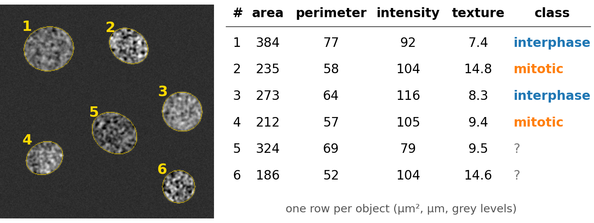
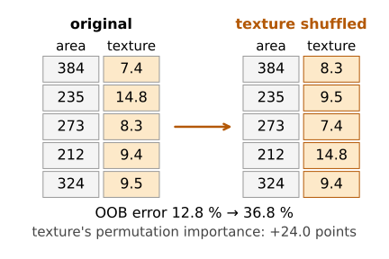
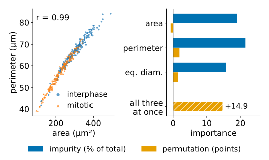
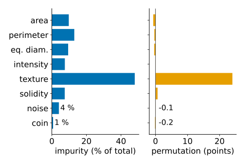

Segment the cells, measure each one, classify the rows of the table: mitotic or not, cell or debris. A forest is the usual first choice for such tables. Then the question every biologist asks: which measurements matter?
Why forests suit tables of object measurements.
Impurity importance: how much each feature’s splits purified the nodes.
Permutation importance: how much worse the forest gets when a feature is shuffled.
The trap: correlated features (area, perimeter, diameter).
Importance describes the model, not the biology.
Slides titled The math give the formulas and proofs; the ideas are complete without them.
Segment the image (thresholding, watershed, …) and label the objects.
Measure each object: area, perimeter, mean intensity, texture, shape (the measurements day).
One row per object, one column per feature; a few rows get a class from an expert.
Train a forest on the labelled rows; it classifies all the others.
The table, not the image, is now the data. Everything from the last two units applies: trees, bagging, OOB error.

Why forests for tables?
Mixed units, no scaling: area in µm², intensity in counts, solidity between 0 and 1; a tree only compares each feature with its own thresholds.
Irrelevant features are mostly ignored: a split on noise rarely wins.
Little tuning: number of trees and m are forgiving.
OOB error for free, fast prediction.
Some interpretability: which features did the forest use?
Which features matter? Two answers
Impurity importance (mean decrease in impurity):
Every split purifies its node by some amount (the impurity decrease of the decision-trees unit), weighted by the share of the points that reach the node.
Add these up per feature, over all splits and all trees.
Free (comes out of training), but measured on the training data.
Permutation importance:
Shuffle one column among the out-of-bag (or held-out) objects, so that it no longer belongs to its object.
Predict again: how much does the error rise?
Honest about prediction, but costs extra predictions.

The math: the two importances
Impurity importance of feature j, for a forest of B trees and n training points: \mathrm{MDI}_j = \frac1B\sum_{b=1}^B\;\sum_{\substack{\text{nodes } t \text{ of tree } b\\ \text{split on } j}} \frac{n_t}{n}\,\Delta I_t , often reported as shares of \sum_j \mathrm{MDI}_j. In each tree the sum over all features telescopes to the root impurity minus the weighted leaf impurities.
Permutation importance, with \pi a random permutation of the (OOB) objects: \mathrm{PI}_j = \operatorname{err}\big(\text{data with column } j \text{ replaced by } x_{\pi(i),j}\big) - \operatorname{err}(\text{data}), averaged over several permutations. It can be slightly negative by chance.
A small tree by hand
100 cells (50 / 50). Root: texture, children (45, 10) and (5, 40). Left child: area, giving (40, 2) and (5, 8). Right child: texture again, giving (5, 5) and (0, 35).
Each box: interphase | mitotic cells; dashed boxes are leaves.
Area, perimeter and equivalent diameter all measure size (correlations 0.99 in the demo’s cells).
Impurity importance splits the credit: whichever of them a split happens to use gets the decrease. An exact duplicate of a feature roughly halves its importance.
Permutation importance can hide all of them: shuffle area, and perimeter still carries the size information, so the error hardly rises. Each looks unimportant; together they matter.
Shuffling one of them also creates impossible objects (a huge area with a tiny perimeter), on which the forest was never trained.

Demo preset “size block” (texture left out).
Remedies and the right question
Group correlated features (look at their correlations first, e.g. the correlation blocks of the measurements day) and permute each group together.
Remove duplicates you do not need, and compare the OOB error with and without a group.
Importance answers “what does this forest use to predict?” It does not say which measurement is biologically causal, nor that a feature with low importance carries no information (another feature may carry the same).
Use it to choose which measurements to keep, not as proof.
Biases of impurity importance
Computed on the training data: deep trees split on anything, even noise, to purify small nodes.
Features with many distinct values (continuous noise) offer many thresholds and win more of these small splits than yes/no features. In the demo, a continuous noise feature gets 4–14 % of the impurity importance, a random yes/no feature 1–3 %.
Permutation importance on OOB data does not have this bias: both noise features stay near 0.

The math: an exact copy halves the credit
Let feature j' be an exact copy of j. Wherever a split on j is best, the same split on j' is equally good; with random candidate subsets (or random tie-breaking) each is chosen about equally often. The total decrease credited to the pair stays what j alone would have got, so in expectation \mathrm{MDI}_j \approx \mathrm{MDI}_{j'} \approx \tfrac12\,\mathrm{MDI}_j^{\text{(without copy)}} . Permutation importance of j with the copy present: the trees that split on j' are unaffected by shuffling j, and many trees use both; the error rises much less than without the copy. In the limit where every split can use either, \mathrm{PI}_j \to 0.
Summary
Object classification: segment → measure → table → forest. Mixed units, no scaling, OOB error for free.
Impurity importance: sum of the weighted impurity decreases per feature; free, but on training data and biased towards features with many values.
Permutation importance: rise of the OOB (or held-out) error after shuffling a column; honest, slower.
Correlated features share or hide their importance: group them and permute the group.